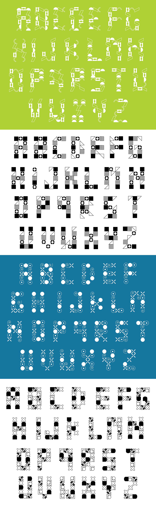
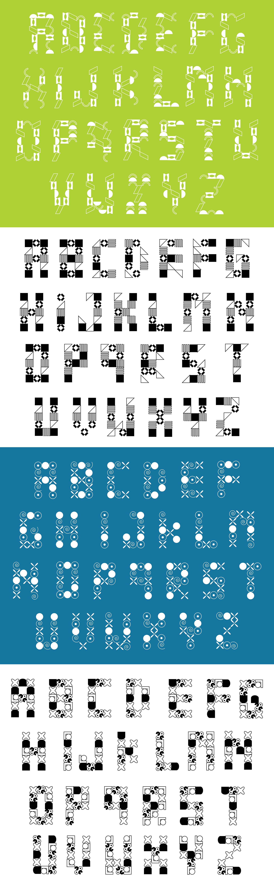
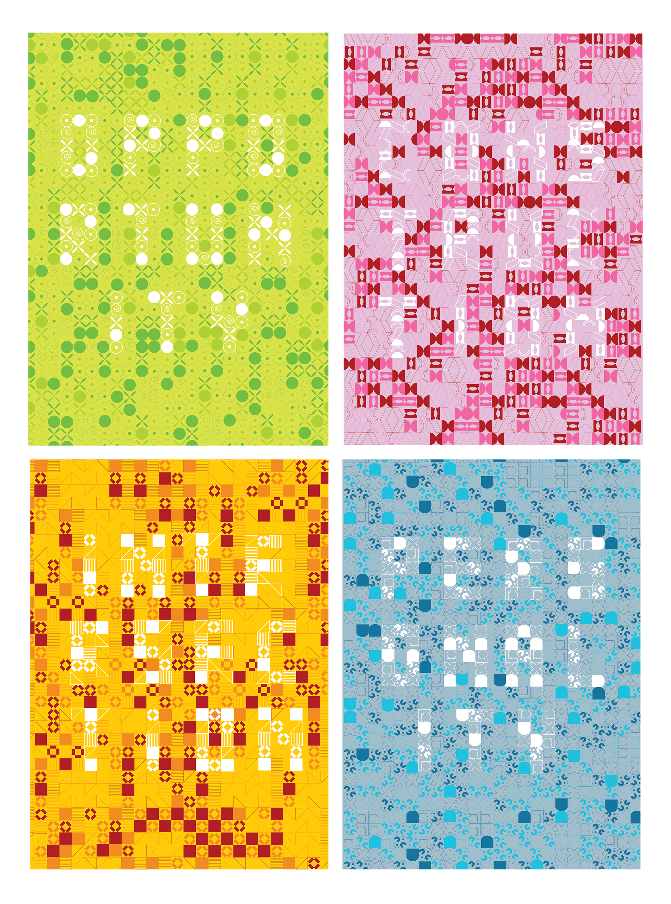
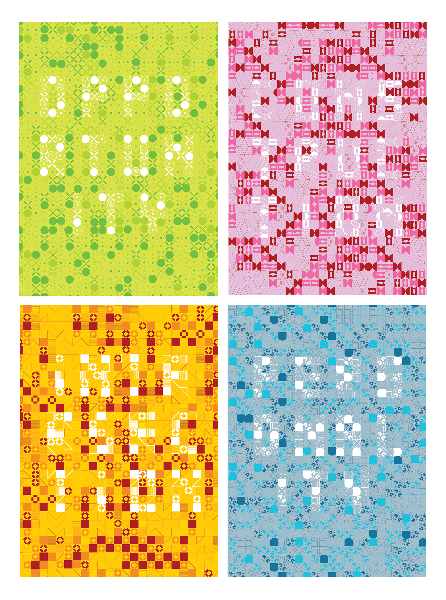
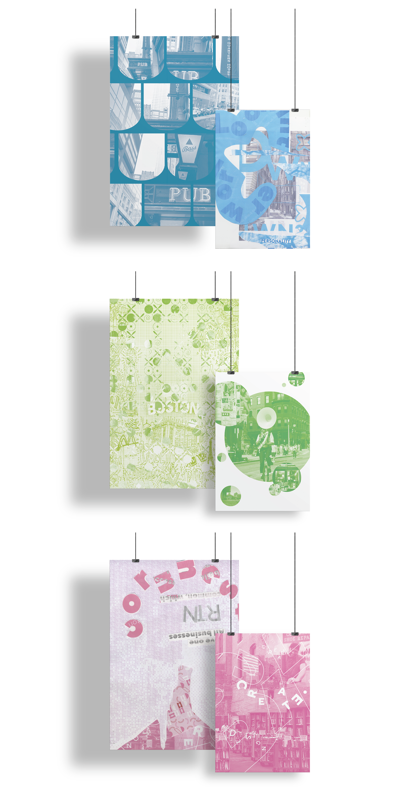
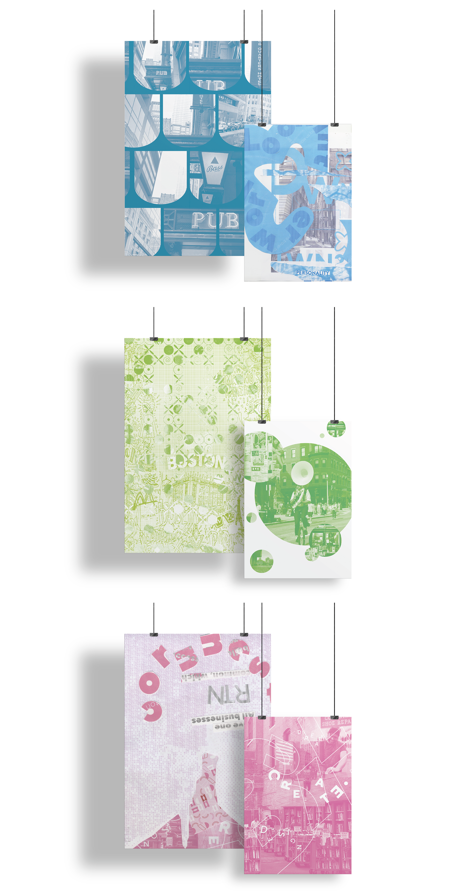

Windows are framing devices that allow us to look into other worlds. They represent opportunities, providing entry points into the unknown and a glimpse into the future. To immerse in Boston's Innovation District in Downtown is to travel through time and place, each block an intersection of diverse personalities, voices and visual languages. The construction of this neighborhood - a convergence of old and new, becomes a portal into the rich culture of today's Boston cityscape. The result is PRJCT_WNDW, a multimedia site-specific design treatment of an empty store front design takeover that provides the stage for the Living Images video pieces for BID (Business Improvement district) of Downtown Boston


 

 


 
